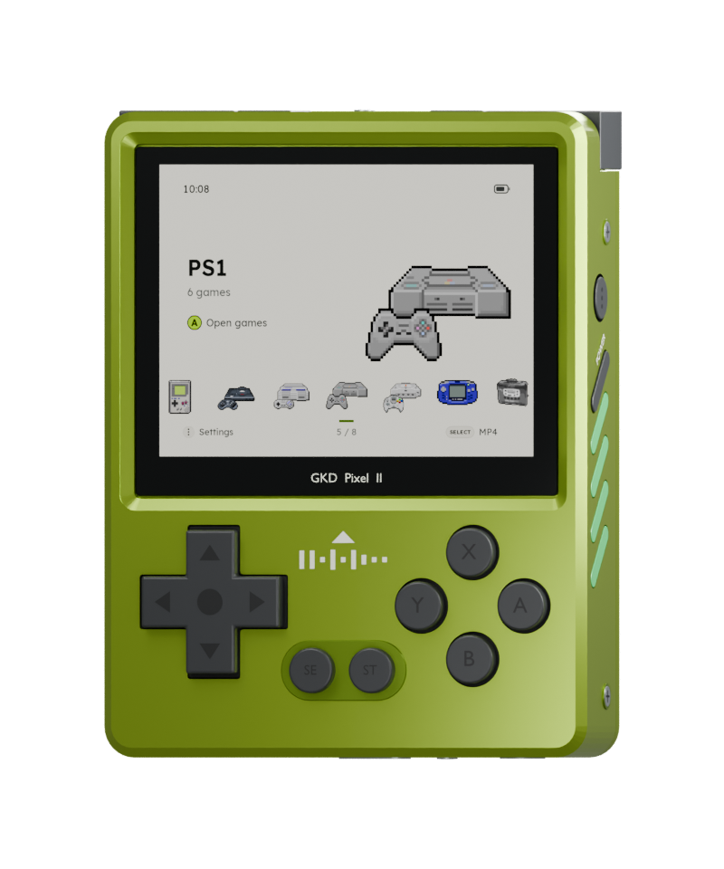

A fast, light firmware for the GKD Pixel 2 that plays your whole retro library.
Forty systems, PortMaster ports, and your music and videos, from a card you can take out at any time.
ZyperOS 1.0.1 is out for the GKD Pixel 2.
Forty systems, PortMaster ports, and your music and videos, from a card you can take out at any time.
ZyperOS 1.0.1 is out for the GKD Pixel 2.


The emulator stays running, so a game is up as soon as you choose it, and it picks up where you left it.
Animated consoles on a Spotlight or Gallery home, A to Z or by release date, and your games as a row of covers.
English, 简体中文, Español, Português (Brasil), Français, Deutsch, 日本語 and Italiano, from the menus and the in-game menu to the charging screen, the boot screen and the File Transfer page. Pick one on the first start or in MENU > Language.
Zyper says hello in each language until you pick yours, teaches each button and shows where it is on the Pixel 2, then asks for the theme, the home screen, the button sounds and the menu music.
An empty card opens on the two ways to add games, USB or Wi-Fi, one button each. Zyper cheers when they arrive.
MENU > Scraper asks libretro with no account, ScreenScraper with a free one in builds that carry its developer pair, and SteamGridDB with your own key. Renamed ROMs match by checksum.
Rest on a game for a second and its cover turns into a few seconds of the game, from ScreenScraper. A play mark says which games have one.
X on a game, then Delete Game: it asks first, then takes the game with its saves, states, cover and video, and the shelf moves on. A file another game still uses stays, and so does a BIOS set like neogeo.zip.
Find any game by a few letters of its name, or let ZyperOS pick one and start it.
Sign in on the device. Achievements download once and then work offline, with badges and progress pop-ups.
A Ports shelf runs PortMaster games, such as Stardew Valley and Celeste.
OpenBOR runs on its own rather than as a libretro core, and MENU still pauses it under the in-game menu: Continue, Controls and Quit, with the volume and brightness bars over the game.
DSperate with three screen layouts and a d-pad stylus, or DraStic if you add it. Mario Kart DS races at 60 frames a second.
Music, audiobooks and videos on a shelf of their own covers. SELECT opens it from anywhere, even in a game, and X locks the screen.
Ten free 8-bit tracks behind the menus, never over a game. Your own in Roms/BGM play instead.
Move games, music and saves from any browser, behind a PIN. With no Wi-Fi around, the handheld makes its own network for your phone. It keeps going while you play, and shows the time left.
A charge limit of 80, 85 or 90%, a charging screen while the handheld is off, and a warning before a low battery or heat gets in the way.
Plug in a computer and the Pixel 2 asks first: charge only, or open USB File Transfer.
Over Wi-Fi, only what changed, signed, with Roll Back. Without Wi-Fi, the File Transfer page brings it over the USB cable.
Dreamcast, PlayStation and Game Boy Color rumble games shake the Pixel 2. Its four side lights show the battery charging and running low, the volume and brightness as you change them, a climb when files or covers finish, and a sparkle for an achievement. MENU > Side Lights turns each on or off.
8-bit and handheld systems run at lower clocks, measured to keep every frame, and the battery lasts longer.
MENU + R1 runs a game at up to 4x. X and Y are turbo A and B.
Controls in the in-game menu shows what each button does in that game, on its system: its own buttons, turbo, the hotkeys, the N64's C buttons and the DS's stylus.
The handheld shows an address and a PIN; open it in any browser, on a computer or a phone, over Wi-Fi, the handheld's own network or the USB cable. No app and no account.
The card's folders, each in ZyperOS's pixel art, ROMs with a folder per console. Drop files anywhere to upload them, with the time left as they go and the card's free space checked first. Download, rename and delete from each file's menu. Over the cable, Settings fetches missing box art and updates ZyperOS with the computer's own internet.

Beard in light, Salt & Pepper in dark. MENU > Appearance chooses Light, Dark or Auto, and the first start asks.


The GKD Pixel 2 has several operating systems to choose from. This is ZyperOS beside the one it comes with and four others, from what each one's own pages, code and releases say in November 2026. ROGUE OS set the bar for this handheld, and ZyperOS set out to match it.
| ZyperOS | Stock1 | ROGUE OS | TortOS | ROCKNIX | plumOS Pixel2 | |
|---|---|---|---|---|---|---|
| Source, license | GPL-3.0 | – | Its changed files, no license named | GPL-3.0 | GPL-2.0 for its own code | MIT for its own code |
| Install, latest | Card image or ZyperOS Installer, v1.0.1 (Nov 2026) | On the card it comes with | Card image, then v1.22's files (Aug 2025) | Card image or TortOS Installer, v2.1.1 (Oct 2026) | Card image, 20261101 (Nov 2026) | Card image, v0.1.4 (Aug 2026), in testing |
| Systems | 40, and Ports | Over 100 folders | 1172 | 11 | 1202 | 862 |
| Games without taking the card out | ||||||
| Box art on the device | ||||||
| Retro | – | – | – | |||
| System updates | – | |||||
| First-start tutorial | – | – | – | – | – | |
| Themes | ||||||
| Languages | 8: English, 简体中文, Español, Português (Brasil), Français, Deutsch, 日本語, Italiano | – | 21, in its launcher | English | 36 | 6 |
| Menu music | – | – | – | – | ||
| Media player | – | |||||
| PortMaster | – | |||||
| Rumble | – | – | ||||
| Side lights | – | – | – | |||
| Video previews on the shelf | – | – | – | – | – | |
| Charge limit | – | – | – | – | – | |
| Charging screen when off | – | – | – | – | – | |
| Boot time | 1.6 s4 | – | – | 2.2 s4 | – | – |

ZyperOS is named after Zyper, my dog, who passed away. He was quick, light on his feet and full of energy, and that is what this system tries to be.
The name is also two words in one: zippy and hyper. Games start the moment you press A, the menus never make you wait, and the whole system comes up in about two seconds.
ZyperOS 1.0.1 is out for the GKD Pixel 2, released in November 2026. Each release has the card image and ZyperOS Installer for macOS, Windows and Linux.
Or download the card image, the .img.xz file, and write it with any disk image writer, such as Raspberry Pi Imager. New versions come later with System Update, over Wi-Fi or the USB cable, or with the installer's Update, which keeps a card's games, music and saves.
ZyperOS stands on other people's work. Thank you to:

ZyperOS is free, and it will stay free. If it made your Pixel 2 more fun, you can leave a tip of any amount, once. It helps me keep building it, and it unlocks nothing: everyone gets the same ZyperOS.